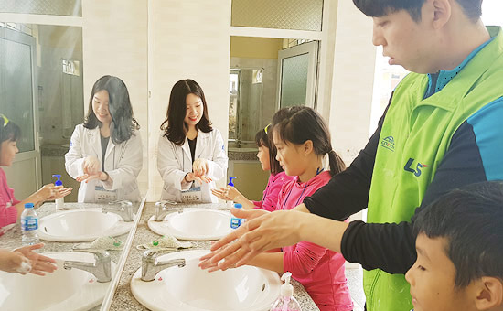
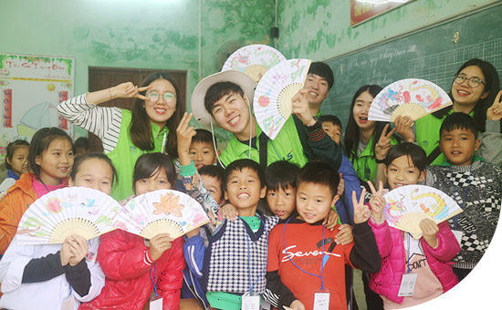
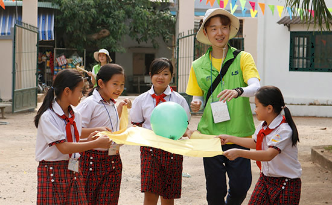

주요 활동 소개
-
 [과학교육]- 재미난 실습을 통해 우리 생활 속 과학원리를 배워 보아요!
- 비행기 만들기, 양치와 손씻기, 정전기 교육, 빛의 반사, 인체장기, 종이컵 전화기, 무게중심 배우기, 태양광 자동차 등 과학 원리를 체험하며 자연과학에 대한 흥미와 탐구하는 자세를 배울 수 있었습니다.
-
 [미술/음악교육]- 알록달록 미술 수업을 통해 창의력 쑥쑥! 신나는 음악 수업을 통해 감수성 쑥쑥!
- 에코백 만들기, 편지쓰기, 전통 부채, 칠교놀이, 팬플루트 만들기, 종이컴 시계와 팽이, 접시왕관, 소원나무, 동요와 율동배우기를 통해 어린이들은 풍부한 정서와 창조성을 기를 수 있었습니다.
-
 [체육교육]- 몸과 마음이 성장하는 활기찬 체육 시간
- 체조, 수건돌리기, 림보 게임, 포스트잇 빨리 떼기, 판 뒤집기, 볼링 게임, 무궁화 꽃이 피었습니다, 투호 놀이 등은 어린이들이 신체 발달과 함께 건강한 품성을 기를 수 있었습니다.